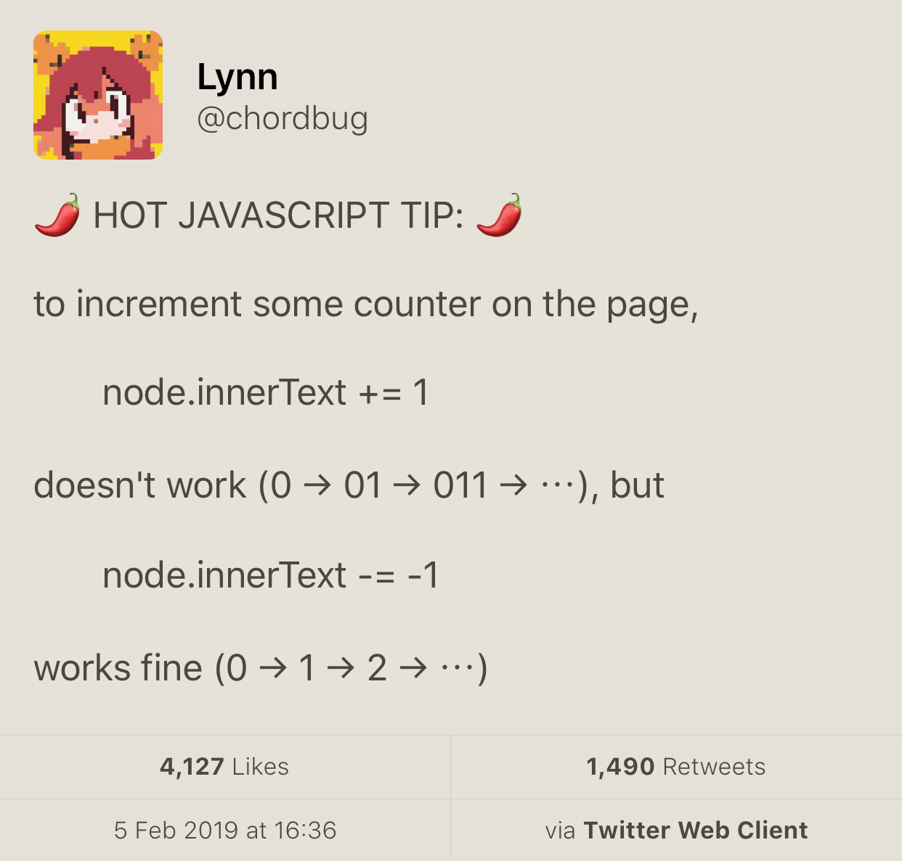

2019-02-14
https://www.reddit.com/r/cpp/comments/947a1z/proper_way_to_do_backward_iteration_in_c/
for (size_t i = data.size() - 1; i >= 0; --i) { ... } // Nope
for (size_t i = data.size(); i--;) { ... } // The C way
// C++17
std::vector<int> vec;
for (auto [value, idx] : reverse_index_adapter(vec)) {
// idx = n-1, n-2, ... 0
}
std::for_each(vec.rbegin(), vec.rend(), []() { ... }); // No index
for (auto it = data.rbegin(); it != data.rend(); ++it) {
auto i = std::distance(it, data.rend()) - 1;
}Inverse two-phase initialisation
class Foo
{
static expected<construction_token>
preconstruct(Arg n_arg) noexcept
{
construction_token t;
t.state = make_unique_nothrow(n_arg);
if (!t.state) return unexpected(my_errc::error);
return t;
}
Foo(construction_token&& t) noexcept
: m_state(std::move(t.state)) {}
};Inverse two-phase initialisation: usage
// 1
expected<Foo::construction_token> t1 = Foo::preconstruct(args);
if (!t1.has_value()) { /* get out */ }
Foo obj(std::move(*t1));
// 2
auto t2 = Foo::preconstruct(args);
auto obj_ptr = std::make_shared<Foo>(std::move(*t2));
// 3
auto t3 = Foo::preconstruct(args);
std::vector<Foo> objects;
objects.emplace_back(std::move(*t3));